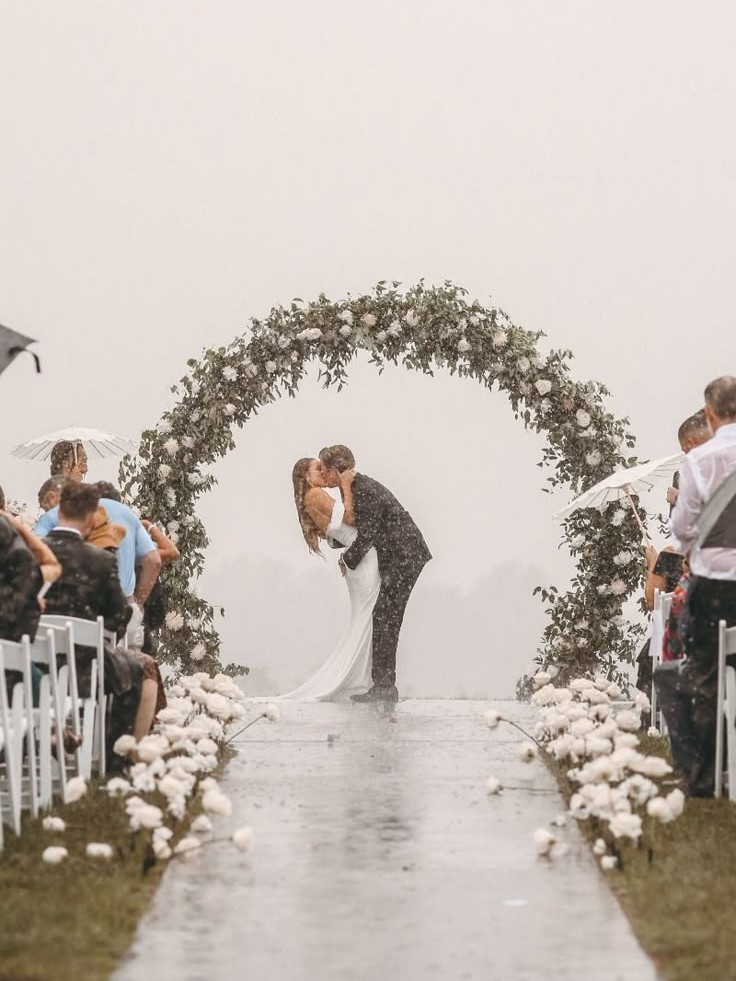
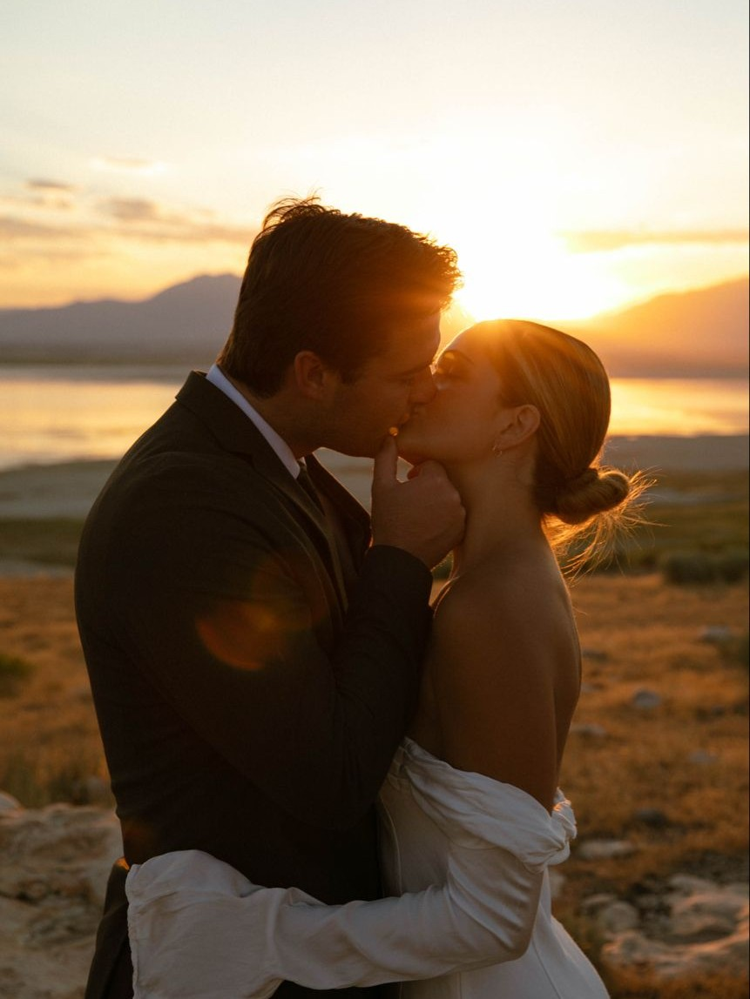
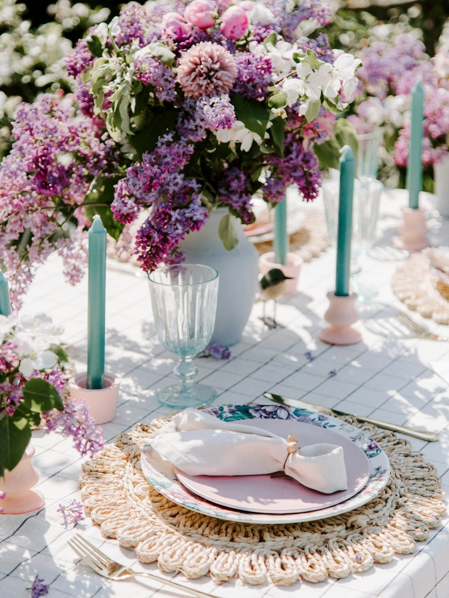
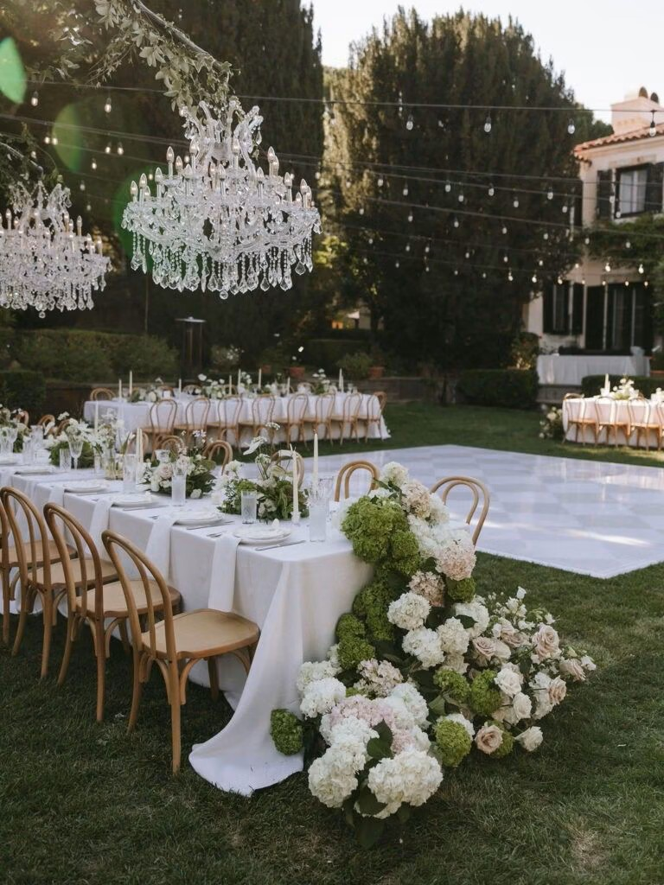
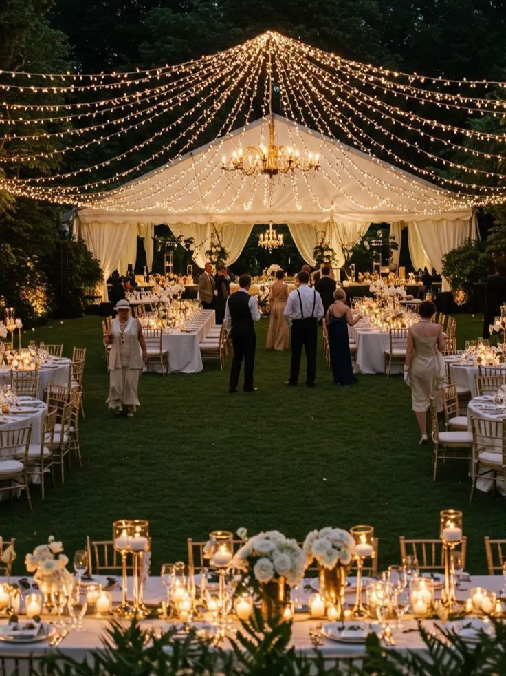

Un "Piano B" che sembri un Piano A
Non considerate il piano di riserva come una sconfitta, ma come un'opportunità narrativa parallela. Una tensostruttura in cristallo, se illuminata con regia architetturale e arredata con lo stesso rigore dell'esterno, può trasformare un temporale improvviso in un momento di intimità cinematografica.

La semiotica della luce
La luce non è solo funzionale, è il pennello con cui scriviamo l'atmosfera. Per un matrimonio all'aperto, la 'Golden Hour' deve dettare la timeline del rito. Studiamo l'orientamento del sole per evitare ombre dure sui volti durante le promesse.

Integrazione cromatica con il paesaggio
La palette non deve competere con la natura, ma esaltarla. Se il contesto è un vigneto, lavoriamo con toni neutri, sage green e tocchi di lilla per richiamare i riflessi dell'uva e del terreno. I materiali devono essere organici.

Il flusso della narrazione spaziale
Un evento all'aperto di successo si basa sul movimento. Create zone distinte che invitino alla scoperta: l'area del rito come santuario di silenzio, il cocktail come esplosione di energia visiva e la cena come rifugio conviviale.
Comfort e Footwear
L'eleganza non deve mai compromettere il benessere. Informate gli ospiti sulla natura del terreno. Prevedete dei 'heel stoppers' per le signore in tacchi a spillo e una pedana in legno sartoriale che funga da passerella invisibile.
Allestimenti a prova di gravità
In esterni, il vento è un ospite non invitato. Ogni elemento decorativo deve essere zavorrato con stile: cilindri in vetro borosilicato per le candele e strutture floreali ancorate con pesi integrati nel design stesso.

La propagazione del suono
L'acustica all'aperto è complessa. Un impianto audio distribuito è preferibile a due grandi casse frontali: permette un volume costante e cristallino in tutta l'area senza disturbare la conversazione degli ospiti.
La gestione delle temperature
Il lusso è cura del dettaglio climatico. Nelle ore calde, una 'Hydration Station' con acque infuse; per la sera, plaid in cashmere o stufe dal design minimalista garantiscono che la festa prosegua senza brividi.
Lighting Design dopo il tramonto
Quando scende il buio, la natura scompare e rimane solo ciò che illuminiamo. Puntiamo su cieli stellati di micro-luci per creare un soffitto virtuale e luci radenti sugli alberi per dare tridimensionalità allo spazio.

Logistica e infrastrutture "invisibili"
Il vero successo è ciò che l'ospite non vede: i cavi nascosti, i generatori silenziati, l'accesso agevole per il catering. Un'infrastruttura impeccabile è la base su cui poggia l'estetica. Senza una regia tecnica invisibile, la bellezza è solo superficiale.